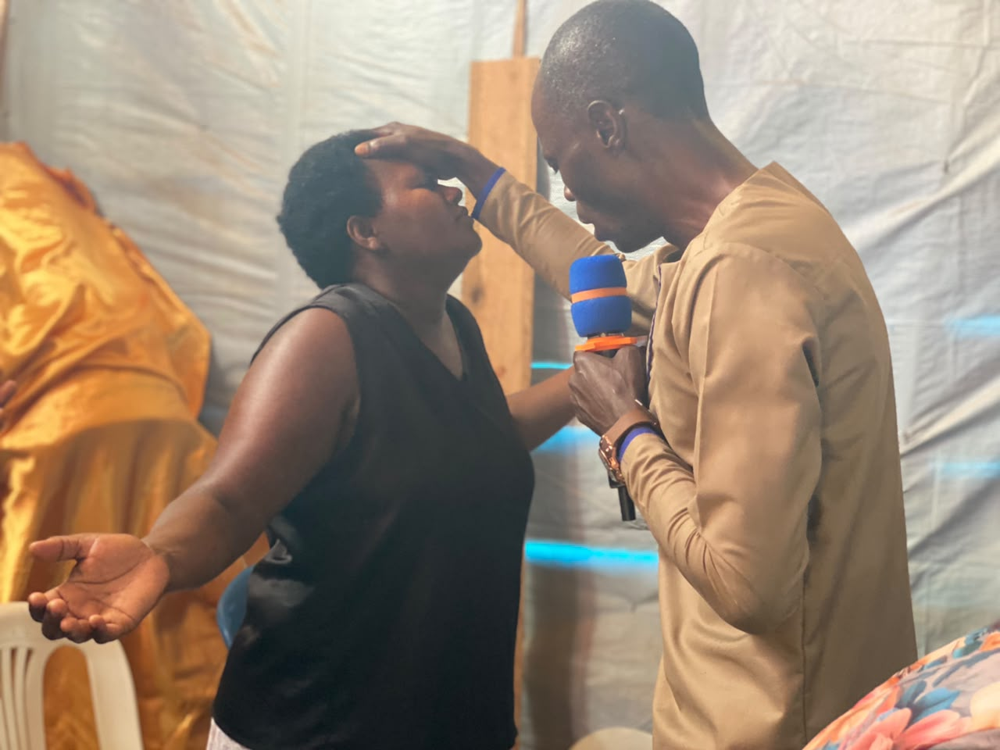
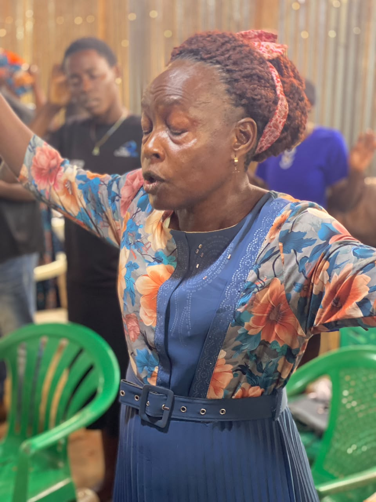

Where We Are Now
The Old Church — a tent, and everything that happens inside it.
For now, Ebenezer Miracle Center gathers under a decorated worship tent with corrugated iron walls in Kalisizo Town Council — colorful drapes overhead, a modest pulpit at the front, plastic chairs filling in for pews. It is simple. It is also, week after week, full of life: praise, prayer, healing, and prophetic ministry that doesn't wait for a finished building to move.
This is the space where Pastor Lubega William has shepherded the congregation for years — and where every testimony of "thus far the Lord has helped us" has been spoken aloud, long before the first brick of the new sanctuary was laid.


